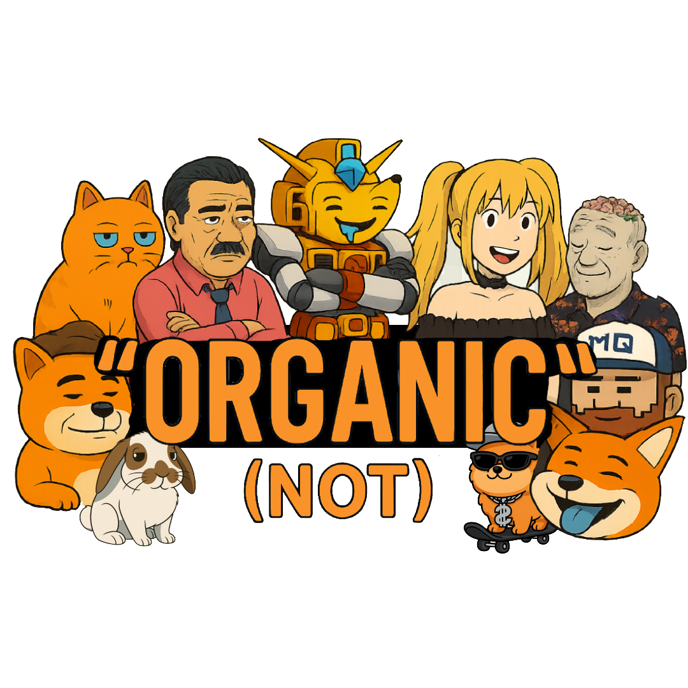

区块链社区的 AI 驱动基础设施
Organic 正在构建区块链社区的运营基础设施。就像 Shopify 让任何人都能开设在线商店一样，Organic 让任何加密项目都能快速搭建功能完整的 DAO——包含治理、任务管理、链上国库、贡献奖励，以及一个 AI 管家来维持社区日常运转。
当前产品 Organic Hub（organichub.fun）是已上线的 v1 版本，服务于 $ORG 社区。所有核心功能均已构建、测试并稳定运行。下一阶段将把它升级为任何社区都可使用的多租户平台。
每个加密社区都在 Discord 和 Telegram 上运营——这些只是聊天工具，不是协作工具。没有办法衡量谁做了贡献，国库不透明，治理决策无法落地执行，没有问责机制。创始人疲于亲力亲为，社区在发布后迅速沉寂。
| 七大核心能力 | 具体作用 |
|---|---|
| 透明度 | 链上可验证的活动记录，一切公开可查 |
| 奖励分配 | 贡献者根据真实可量化的工作获得奖励 |
| 激励机制 | 冲刺周期、排行榜、XP 积分、声誉系统 |
| 社区管理 | AI 管家自动处理日常运营事务 |
| 路线图定义 | 链上提案与社区投票 |
| 冲刺执行 | 有时间节点的工作周期，配套结构化任务 |
| 自动支付 | 多签国库的无信任链上自动结算 |
一个新项目注册后，15 分钟内自动完成以下所有配置：
| 步骤 | 自动完成内容 |
|---|---|
| ① 子域名 | 项目 Hub 上线，地址为 projectname.organichub.fun（认证版支持自定义域名） |
| ② 链上国库 | 在 Solana 上创建 Squads 多签国库——Organic 永不持有客户私钥 |
| ③ 引导章程 | 部署初始治理规则、首个冲刺周期、启动任务包、基础提案（供社区投票通过） |
| ④ AI 管家 | 自动起草任务、提醒贡献者、总结冲刺、维持社区活跃——即使创始人不在线 |
| ⑤ 社区选举 | 成员投票选出 4 名理事会签名人，多签从创始人独控切换为 3/5 多签治理 |
核心价值主张：社区不会在发布后陷入沉寂，因为 AI 管家持续维持运营循环。这也是整个多租户故事的关键——如果需要创始人手动推动每件事，没有其他社区会采用这套系统。
三条收入来源，均在社区成功时才产生成本——设计上与客户利益对齐。
全功能 Hub，有限 AI 管家用量（每日 50 次操作）。获取顶层流量漏斗。
自定义域名、无限 AI 管家、实时操作、Scan 高级档案、高级 AI 功能。
当社区通过平台实际发放奖励时抽取，超过月 $1K 阈值后生效。仅对成功社区收费。
| 规模 | 预估月度基础设施成本 | 盈亏平衡点 |
|---|---|---|
| 1–10 个社区 | $200–500 | 自筹覆盖（种子期） |
| 10–50 个社区 | $1,000–3,000 | 1–2 个付费认证版覆盖 |
| 50–200 个社区 | $5,000–20,000 | 5–10 个成功社区的奖励池分成覆盖 |
| 200–1,000 个社区 | $20,000–100,000+ | 头部 10% 社区覆盖 80%+ 的平台成本 |
结构逻辑：幂律效应意味着少数大型成功社区覆盖所有人的基础设施成本。免费版构建流量漏斗；奖励池分成在赢家身上获取上行收益。不发行平台代币分配，不进行股权稀释。
xxx.organichub.fun 子域名。最先执行——所有后续阶段的基础依赖。| 状态 | 内容 |
|---|---|
| ✅ 已上线 | $ORG 社区的完整 DAO 平台（约 70 名成员，organichub.fun） |
| ✅ 已上线 | 任务管理、提案、投票、冲刺周期、国库看板、声誉系统、数据分析 |
| ✅ 已上线 | AI 辅助翻译、内容创作、XP 积分体系、连续登录奖励 |
| ✅ 已上线 | 安全加固（3 个严重 + 3 个高危漏洞修复，186 个新断言，4 份审计报告） |
| 🔲 即将 | 多租户（任意社区均可入驻） |
| 🔲 即将 | Organic Passport 身份层 |
| 🔲 即将 | AI 管家（自驱动社区运营） |
| 🔲 即将 | Organic Scan 发现层 |
| 🔲 即将 | 认证版订阅 + 分成收入 |
| # | 指标 | 验证方式 |
|---|---|---|
| 1 | 多租户隔离正常运行 | 两个测试社区数据完全隔离，RLS 无泄漏 |
| 2 | 15 分钟内完成社区开通 | 从首次点击到国库 + 冲刺 + 成员加入，全程不超过 15 分钟 |
| 3 | 国库非托管 | Organic 从不持有任何租户的私钥，通过 Squads 链上浏览器可验证 |
| 4 | 社区自驱动运营 | AI 管家编排完整冲刺周期，理事会签名，无需 Organic 内部人员手动干预 |
| 5 | Scan 产出真实 Alpha | 识别出至少 3 个"强社区、低代币价格"的真实案例 |
| 6 | Passport 被至少 1 个外部应用采用 | 1 个非 Organic 的 Solana 应用读取 Passport 凭证用于身份门控 |
| 7 | 幂律收入成立 | 认证版上线 6 个月内，头部 10 个成功租户覆盖 ≥80% 的基础设施成本 |